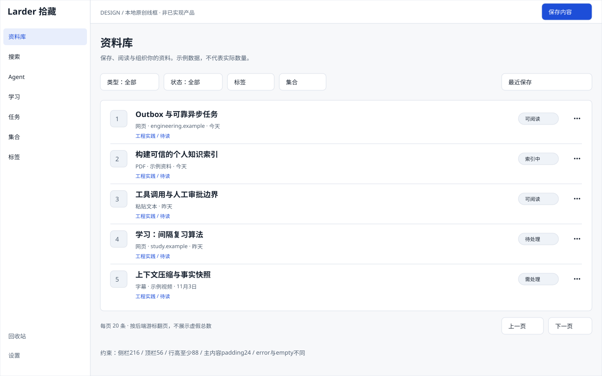
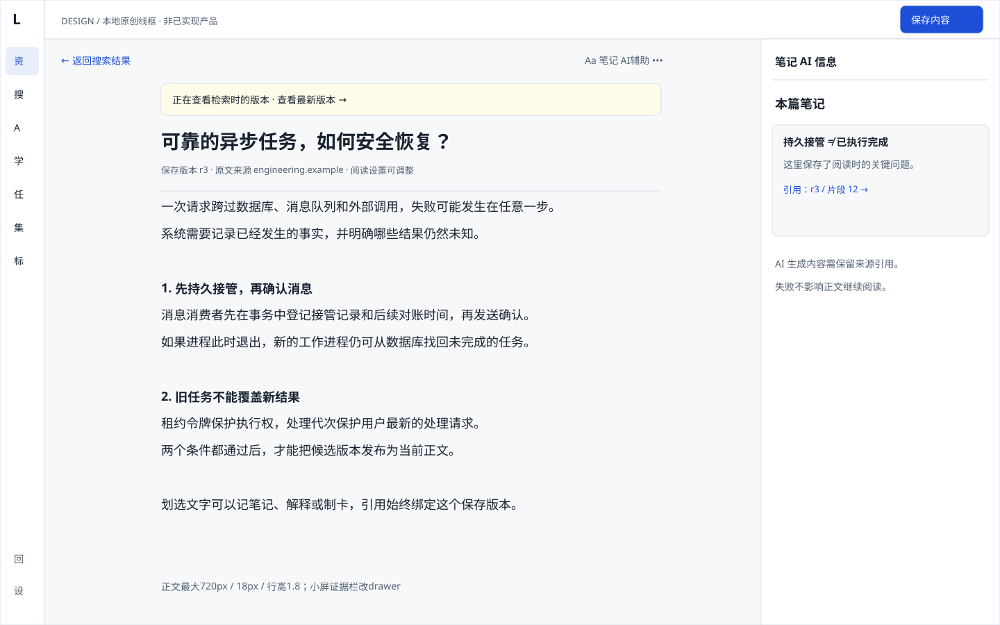
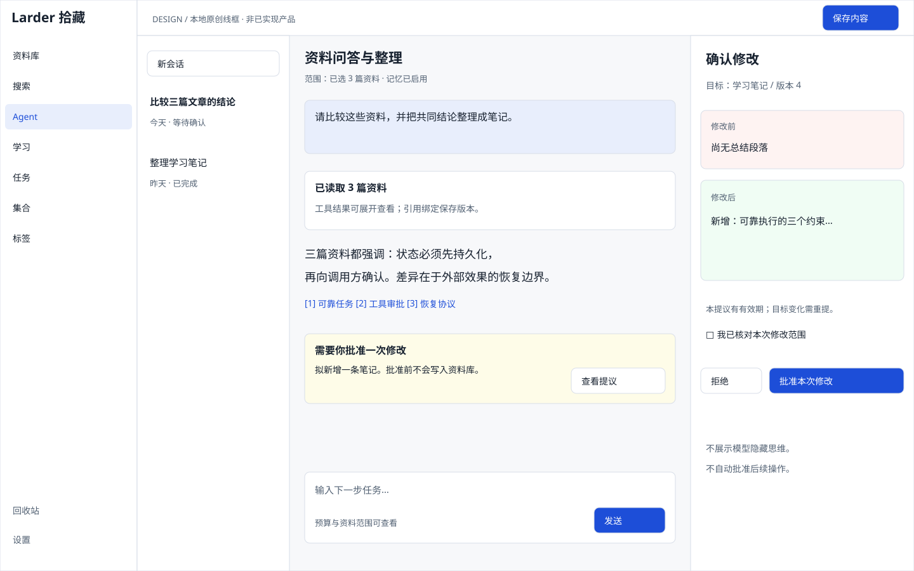
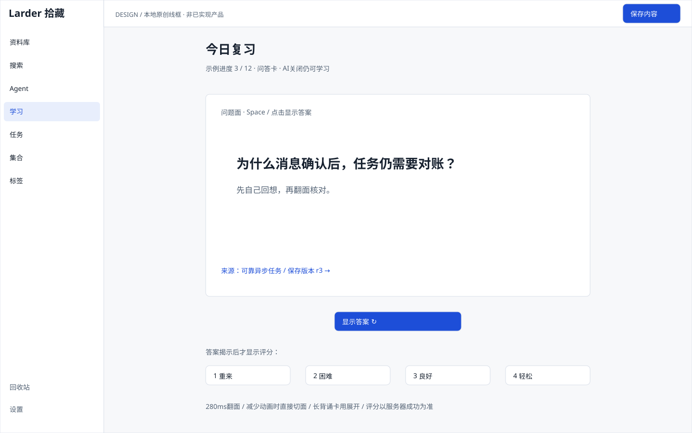

Larder 拾藏 · 前端执行基线
这是一份给开发Agent使用的原创线框与交互示范，不是已完成的React产品。尺寸、状态、接口和验收以docs/14、15及design/tokens.json为准。四张线框可离线查看，外部参考通过官方链接打开。
侧栏 216px顶栏 56px正文 720px / 18px / 1.8主色 #1D4ED8翻面 280ms默认分页 20，最大 50
翻卡交互示范
问答与挖空卡翻面；长背诵卡与时间戳卡展开。这里只演示显示状态，不发送请求、不改变复习记录。生产实现评分必须等待Java确认，网络结果未知时查询原请求。
问答卡 · 设计示例问题面
先回想，再核对
为什么消息确认后，任务仍需要对账？
提示：区分“持久接管”与“执行完成”。
来源：可靠异步任务 / r3 / 片段12翻面后显示可评分状态；减少动画设置下直接切换。
页面线框




官方界面参考
核验日期2026-11-05。只借鉴信息层级与侧栏交互；不复制品牌、代码或外站功能范围。未打包第三方截图。链接内容可能随官方版本变化，本地规范是稳定依据。
- REF-LW-LIST — 资料库的信息层级与导航参考；最终布局以本地F01为准 官方说明 · 官方截图
- REF-LW-DETAIL — 内容详情与保存版本入口参考 官方说明 · 官方截图
- REF-RW-LEFT — 阅读目录侧栏收起参考 官方说明 · 官方截图
- REF-RW-RIGHT — 阅读证据侧栏收起参考 官方说明 · 官方截图
Agent开工规则
领取具体Fxx任务与独立目录，锁定designRev；消费公共组件，不重画导航。每页覆盖loading/empty/error/授权及特有冲突状态。Mock通过仅标MOCK_READY，真实API与浏览器验证后交付协调者集成。